Elektrische Schnittstelle#
Das Anschlussfeld des FlexiBowl® variiert je nach Version der Maschine:
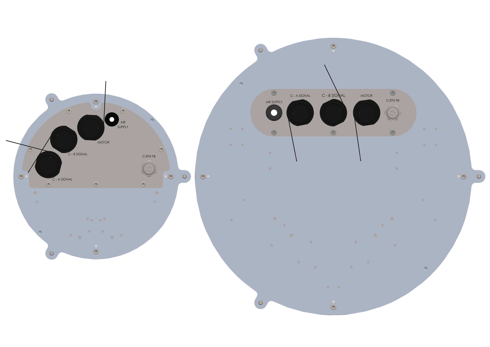
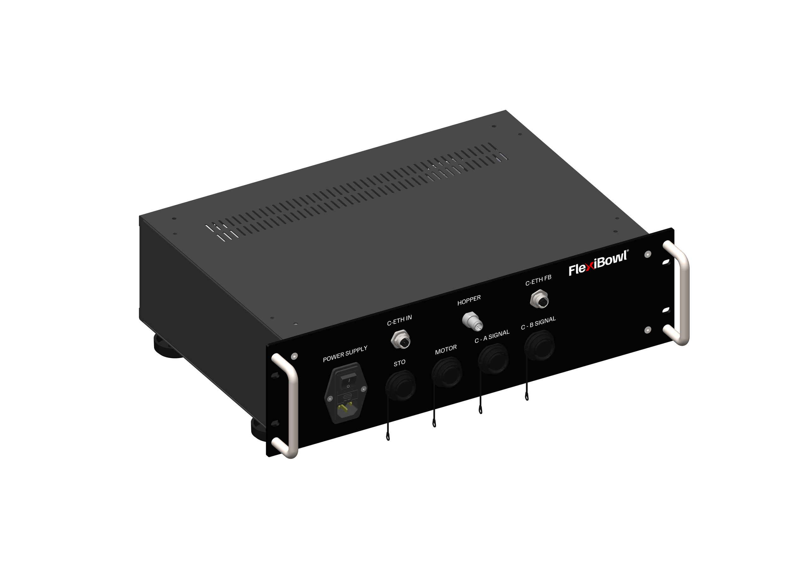
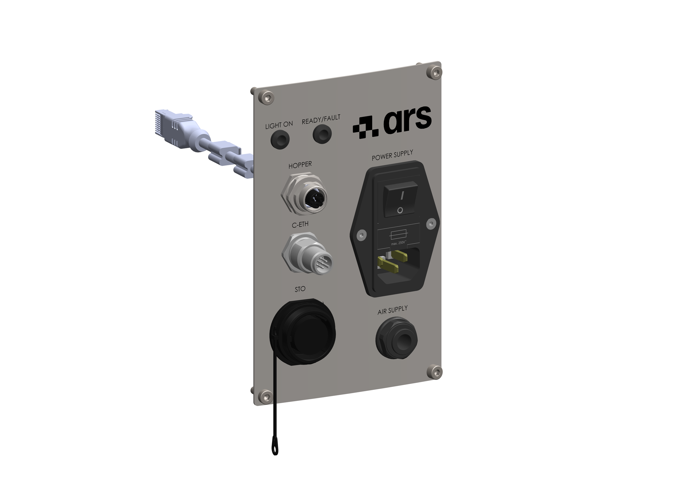
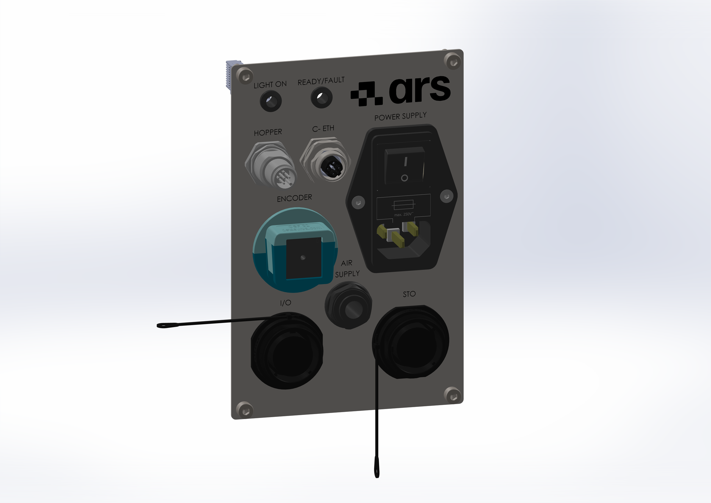
Warning
Vor jedem elektrischen Anschluss sicherstellen, dass die Spannungsversorgung getrennt ist und sich das System in einem sicheren Zustand befindet.
Important
Um die Stromversorgungsstecker herum etwa 100 mm freien Platz lassen, um Verdrahtung und Wartung zu erleichtern.
Die elektrische Schnittstelle des FlexiBowl® ändert sich je nach Baugröße der Maschine:
FlexiBowl® 500 – 1200: Alle Stecker (STO, Ethernet, Hopper, Spannungsversorgung, Luft) befinden sich auf einem einzigen elektrischen Standard-Anschlussfeld, das direkt an der Maschine montiert ist.
FlexiBowl® 200 / 350: Die Hauptstecker befinden sich an einem externen Rack; das Rack wird anschließend über 4 dedizierte Kabel (Ethernet, Motor+STO, Signal A, Signal B) mit der Maschine verbunden. An der Maschine ist nur noch die Druckluft anzuschließen.
FlexiBowl® 500 – 1200 — Elektrisches Standard-Anschlussfeld#
Aktion |
Bild |
|||||||||||||||||||||||||||||||||||||||||||||||||||||||||
|---|---|---|---|---|---|---|---|---|---|---|---|---|---|---|---|---|---|---|---|---|---|---|---|---|---|---|---|---|---|---|---|---|---|---|---|---|---|---|---|---|---|---|---|---|---|---|---|---|---|---|---|---|---|---|---|---|---|---|
1 |
Den STO anschließen. 10-poliger Stecker. Erforderlich, um den Motor zu aktivieren.
Die Eingänge +STO1 und +STO2 müssen vom Sicherheitskreis +24 Vdc erhalten; −STO1 und −STO2 sind an die Bezugsspannung −24 Vdc anzuschließen.
Pinbelegung des STO-Steckers (10-polig)
|
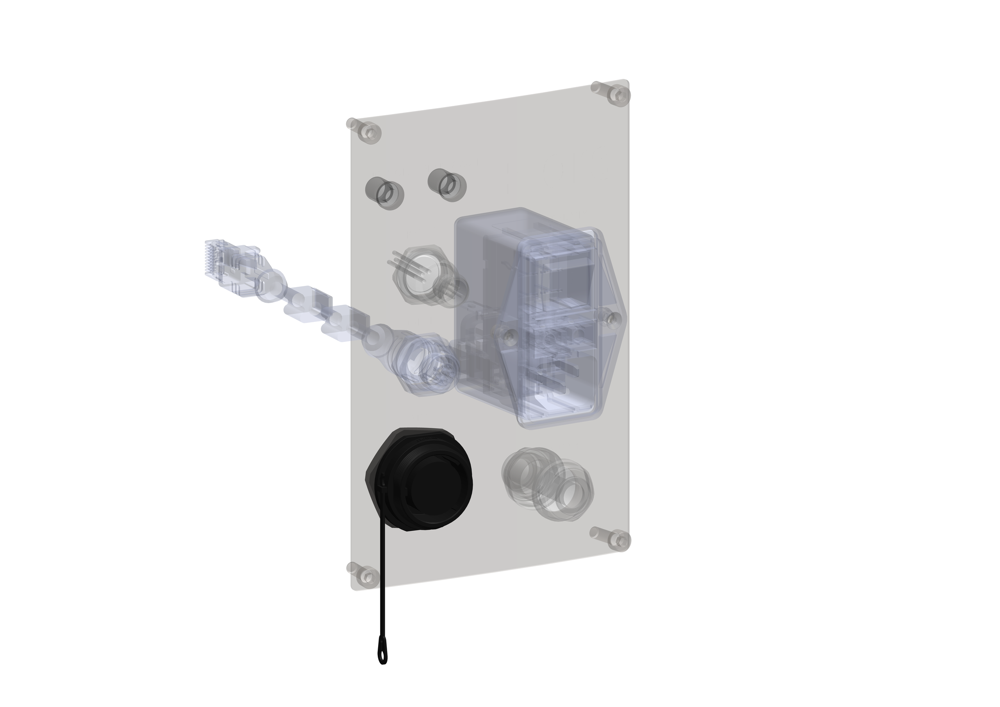 |
||||||||||||||||||||||||||||||||||||||||||||||||||||||||
2 |
Das Ethernet (C-ETH) anschließen. M12-Stecker, D-Kodierung. Er ermöglicht die Kommunikation mit dem FlexiBowl®, der auch über einen Webbrowser erreichbar ist.
Wenn der FlexiBowl® mit Spannung versorgt wird, ist die Ethernet-Verbindung zwingend erforderlich: Fehlt sie, geht die Maschine in den Zustand ERROR über (rote LED Ready/Fault).
Pinbelegung M12 → RJ45Adapter M12 8-polig → RJ45:
4-poliger M12-Stecker, D-kodiert:
|
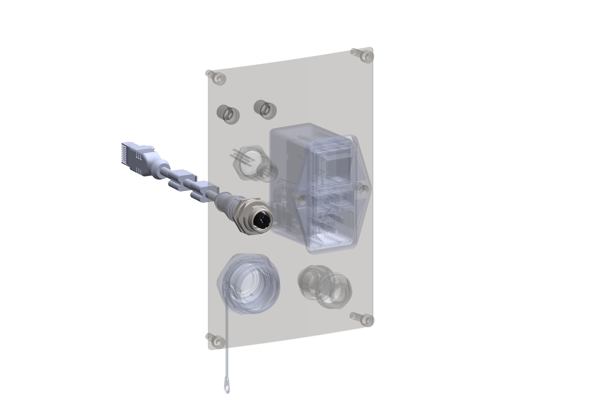 |
||||||||||||||||||||||||||||||||||||||||||||||||||||||||
3 |
Den Hopper anschließen. M12-Stecker, A-kodiert, der zur Kommunikation mit ARS-Hopper-Steuerungen über das Protokoll Modbus RTU dient. Pinbelegung M12 A-kodiert
|
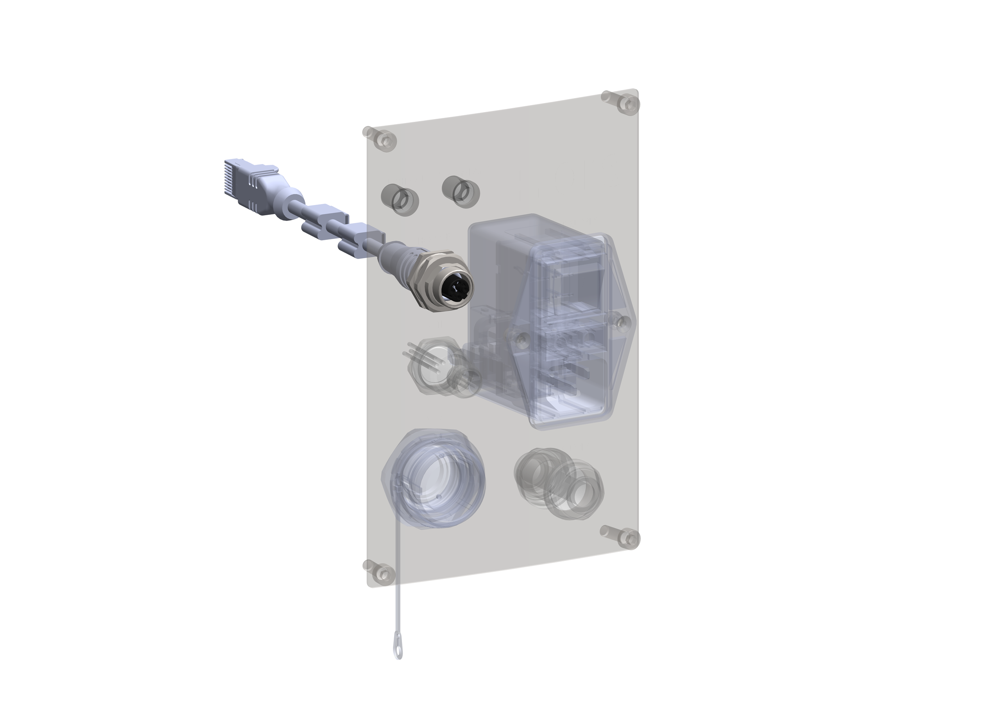 |
||||||||||||||||||||||||||||||||||||||||||||||||||||||||
4 |
Die Spannungsversorgung (Power Supply) anschließen — als Letztes. Mitgelieferter Stecker, gekennzeichnet mit der Bezeichnung POWER SUPPLY. Mit dem Netzschalter kann das Gerät ein-/ausgeschaltet werden.
Sicherstellen, dass der FlexiBowl® ausgeschaltet ist, bevor die Spannungsversorgung angeschlossen wird, und dass das Gerät geerdet ist.
Zulässige Spannung: 120–230 Vac, 50/60 Hz.
Der Stromversorgungsstecker ist mit einer Halterung für 2 Sicherungen ausgestattet, die vor eventuellen elektrischen Störungen schützen. Beim ersten Start stets deren Zustand prüfen, bevor das Gerät eingeschaltet wird.
Pinbelegungsschema des Stromversorgungskabels
|
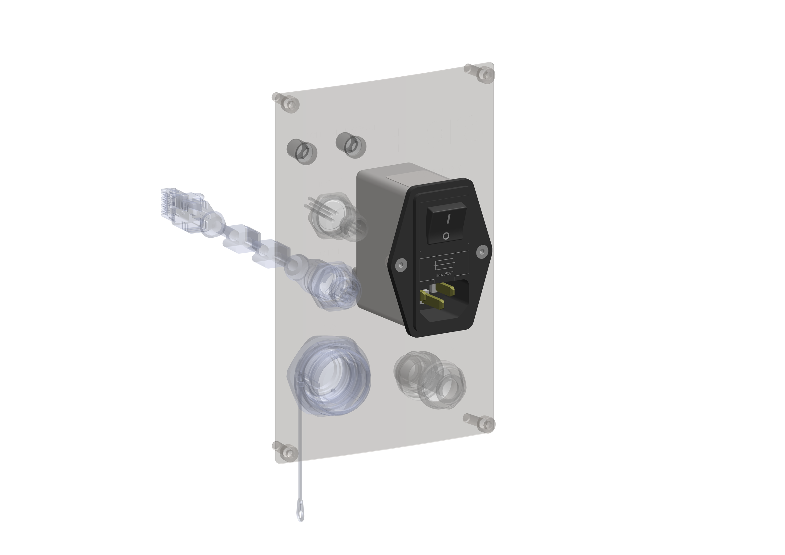 |
Note
Nach dem Einschalten stets den Zustand der Maschine anhand der Status-LEDs am Frontfeld prüfen — siehe Abschnitt Status-LEDs weiter unten auf dieser Seite.
Tip
Die Strom- und Ethernet-Kabel sind optional in den Längen 3, 5 und 10 m erhältlich: siehe Versorgungskabel und Ethernet-Kabel.
FlexiBowl® 200 / 350 — Externes Rack#
Die Modelle FlexiBowl® FB 200 und FB 350 sind mit einem externen Rack ausgestattet, das alle für den Betrieb erforderlichen elektronischen Geräte enthält. Die Stecker zu den Anlagen des Kunden befinden sich am Rack (nicht an der Maschine) und haben die gleiche Pinbelegung wie die entsprechenden Stecker des Standard-Anschlussfelds, lediglich auf einem externen Gehäuse angeordnet.
Anschlüsse am Rack#
Aktion |
Bild |
|||||||||||||||||||||||||||||||||||||||||||||||||||||||||
|---|---|---|---|---|---|---|---|---|---|---|---|---|---|---|---|---|---|---|---|---|---|---|---|---|---|---|---|---|---|---|---|---|---|---|---|---|---|---|---|---|---|---|---|---|---|---|---|---|---|---|---|---|---|---|---|---|---|---|
1 |
Den STO am Rack anschließen. 10-poliger Stecker, gleiche Funktion und Pinbelegung wie beim Standard-Anschlussfeld.
Die Eingänge +STO1 und +STO2 müssen vom Sicherheitskreis +24 Vdc erhalten; −STO1 und −STO2 sind an die Bezugsspannung −24 Vdc anzuschließen.
Pinbelegung des STO-Steckers (10-polig)
|
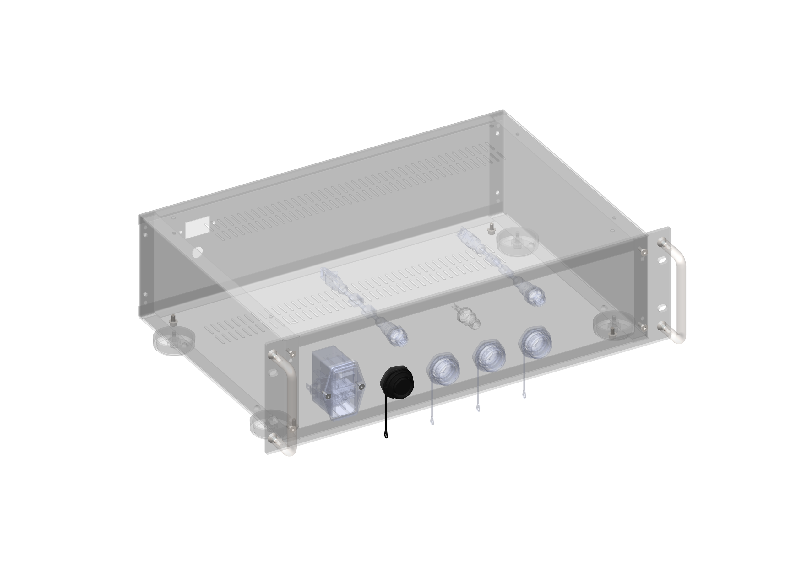 |
||||||||||||||||||||||||||||||||||||||||||||||||||||||||
2 |
Den C-ETH IN am Rack anschließen. M12-Stecker, D-Kodierung.
Verbindung zwingend erforderlich, wenn die Maschine mit Spannung versorgt wird: Fehlt sie, geht die Maschine in ERROR über (rote LED Ready/Fault).
Pinbelegung M12 → RJ45Adapter M12 8-polig → RJ45:
4-poliger M12-Stecker, D-kodiert:
|
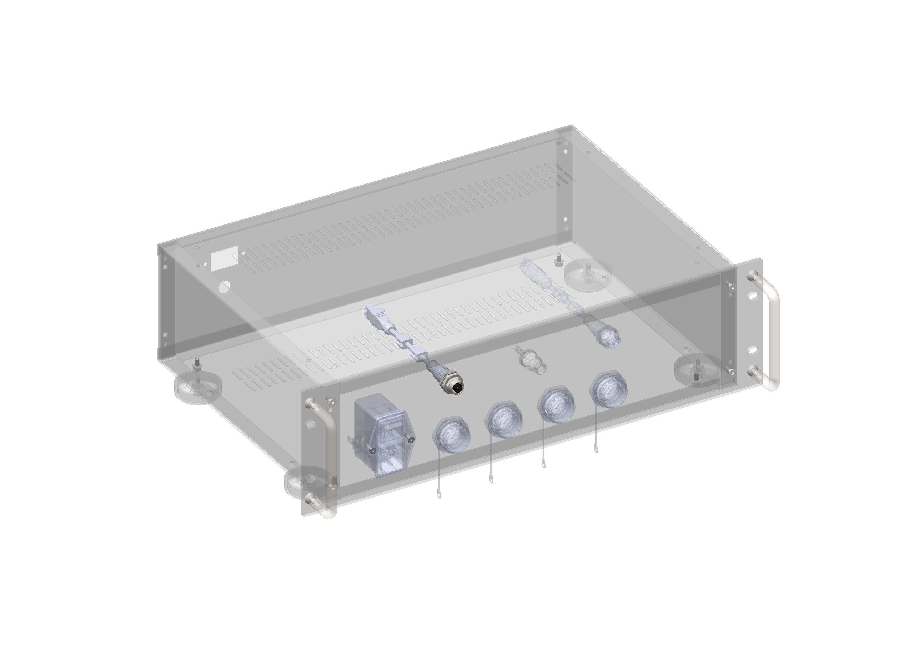 |
||||||||||||||||||||||||||||||||||||||||||||||||||||||||
3 |
Den Hopper am Rack anschließen. M12-Stecker, A-kodiert, Protokoll Modbus RTU. Pinbelegung M12 A-kodiert
|

|
||||||||||||||||||||||||||||||||||||||||||||||||||||||||
4 |
Die Spannungsversorgung am Rack anschließen — als Letztes. Netzbuchse mit Schalter; sie enthält auch einen IEC-Filter.
Sicherstellen, dass der FlexiBowl® ausgeschaltet ist, bevor die Spannungsversorgung angeschlossen wird.
Zulässige Spannung: 120–230 Vac, 50/60 Hz.
Auch am Rack verfügt der Stromversorgungsstecker über eine Aufnahme für die 2 Schutzsicherungen: Deren Zustand beim ersten Start prüfen.
Pinbelegungsschema des Stromversorgungskabels
|
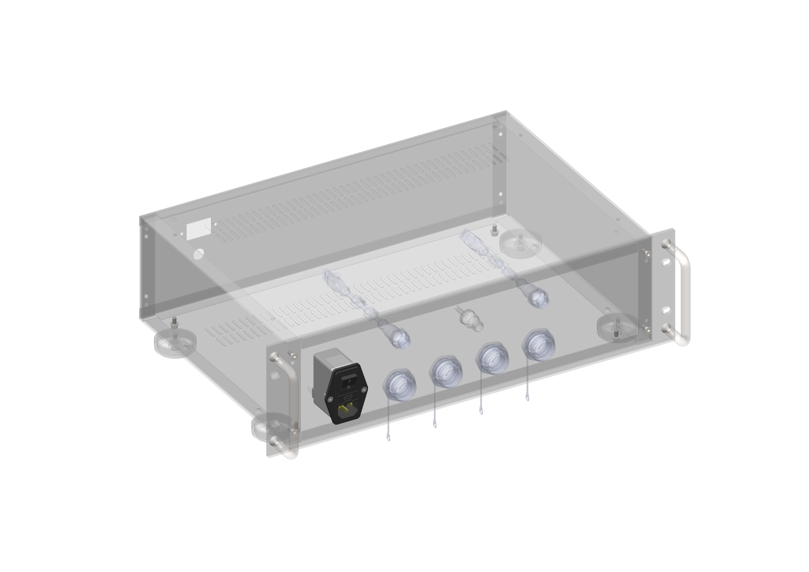 |


Verbindung zwischen Rack und FlexiBowl®#
Das Rack kommuniziert über 4 dedizierte Kabel mit dem FlexiBowl®, die jeweils ausschließlich an den Anschluss mit der entsprechenden Beschriftung am Maschinen-Anschlussfeld anzuschließen sind.
Attention
Jedes Kabel mit dem Anschluss mit dem entsprechenden Etikett verbinden (z. B. MOTOR ↔ MOTOR, C-A SIGNAL ↔ C-A SIGNAL). Eine vertauschte Verbindung kann das System beschädigen.
Tip
Die 3 m langen Kabel zwischen Rack und FlexiBowl® sind im Lieferumfang enthalten; die Versionen mit 5 und 10 m sind optional erhältlich: siehe Kabel für externen Elektronikschrank (Rack).
Aktion |
Bild |
|||||||||||||||||||||||||||
|---|---|---|---|---|---|---|---|---|---|---|---|---|---|---|---|---|---|---|---|---|---|---|---|---|---|---|---|---|
5 |
Das Ethernet-Kabel (C-ETH FB) zwischen Rack und FlexiBowl® anschließen. M12-Stecker, D-kodiert. |
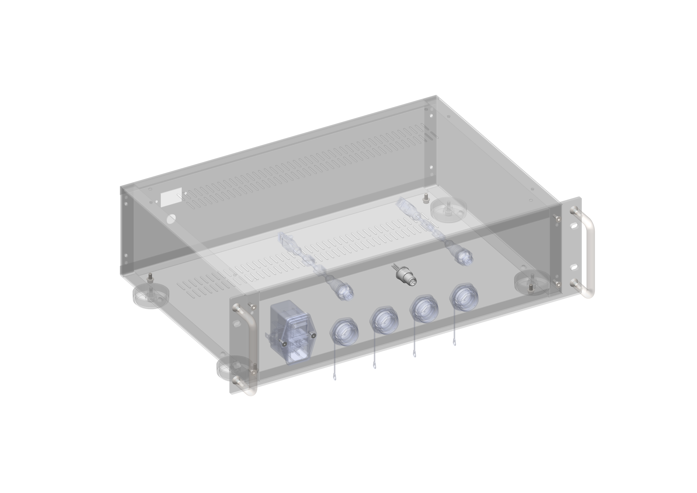 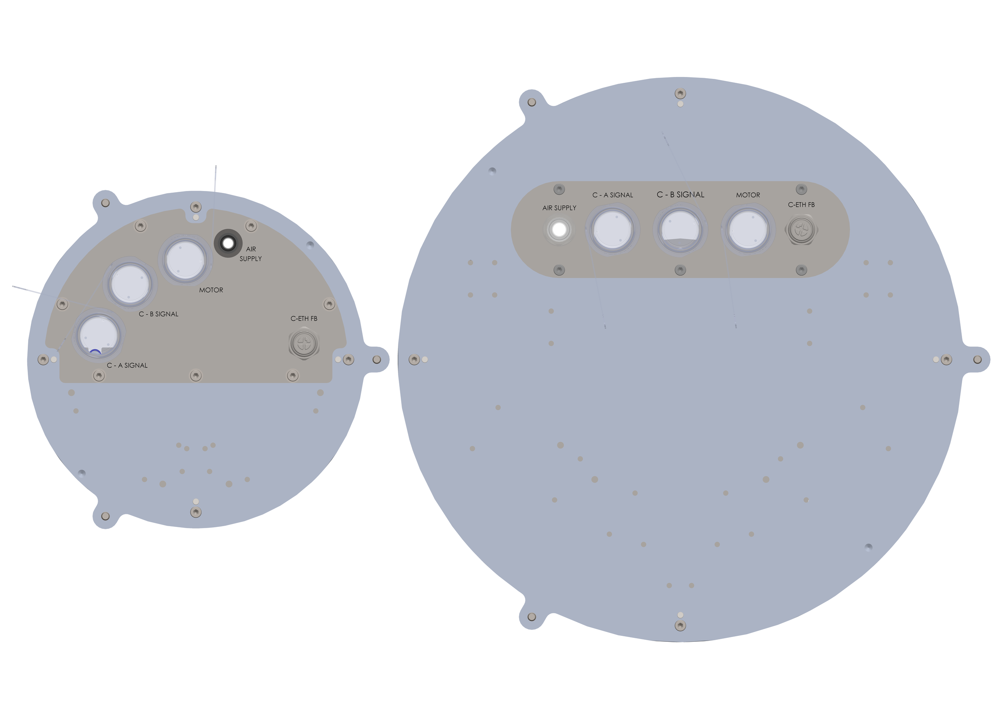 |
||||||||||||||||||||||||||
6 |
Das MOTOR-Kabel anschließen.
9-poliger Stecker: Er führt sowohl die Motorversorgung als auch die STO-Signale zum FlexiBowl® (am Rack sind STO und Motor getrennte Stecker; am Kabel zur Maschine sind sie in einem einzigen 9-poligen Stecker zusammengefasst).
Pinbelegung des Motor-Steckers (9-polig)
|
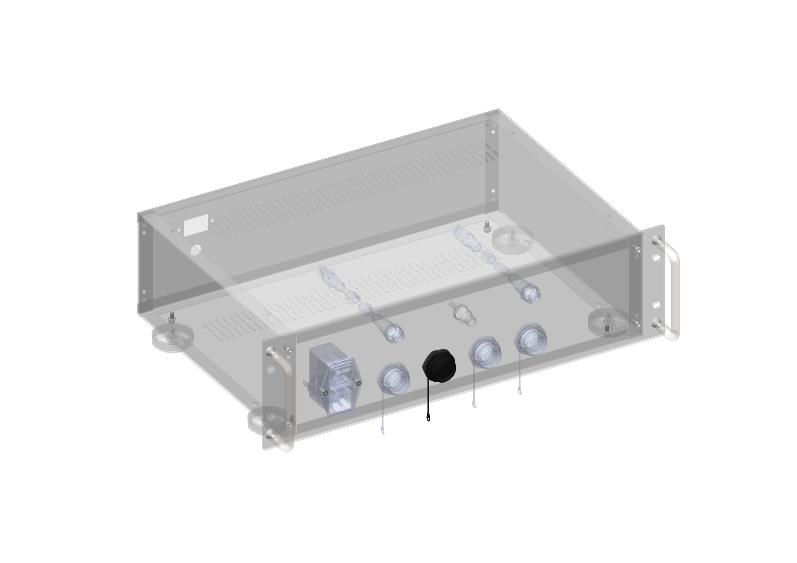 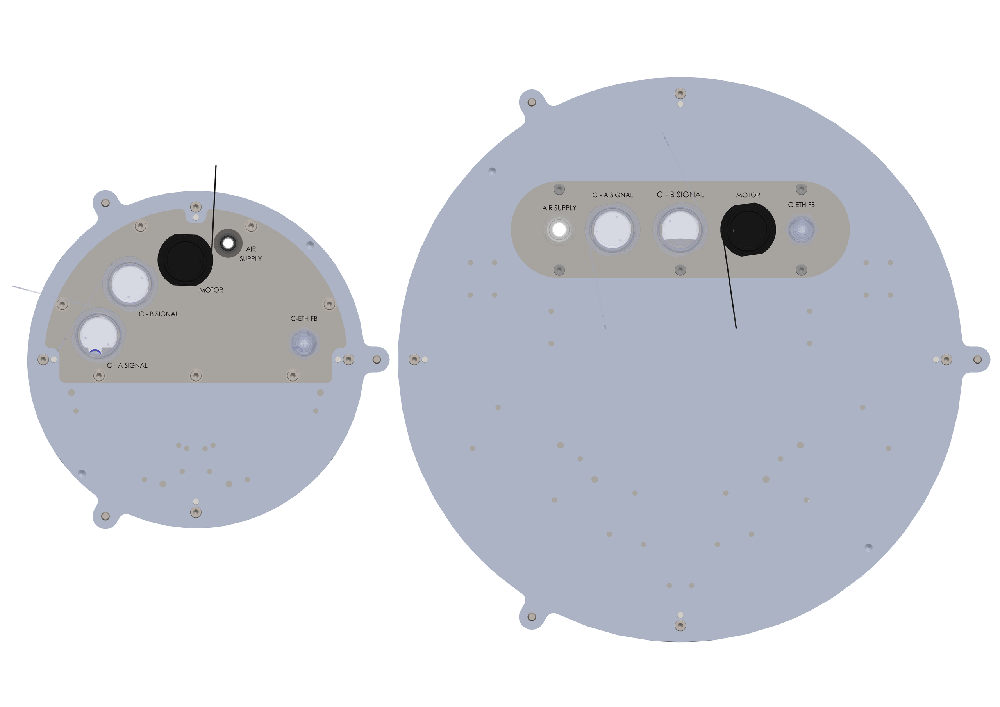 |
||||||||||||||||||||||||||
7 |
Das Kabel C-A SIGNAL anschließen. 12-poliger Stecker für analoge Signale. Pinbelegung C-A Signal (12-polig)
|
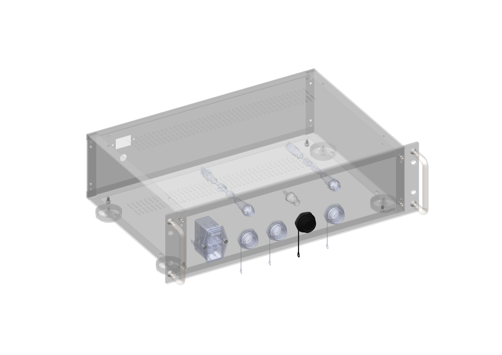 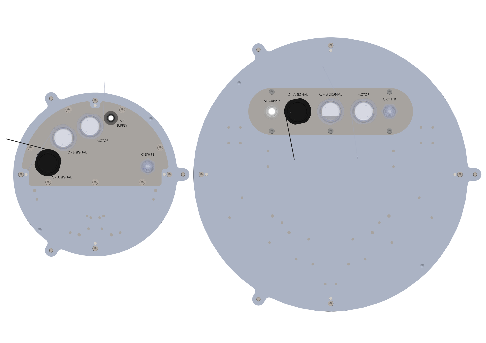 |
||||||||||||||||||||||||||
8 |
Das Kabel C-B SIGNAL anschließen. 19-poliger Stecker für digitale Signale, einschließlich der Ansteuerungen der Status-LEDs. Pinbelegung C-B Signal (19-polig)
|
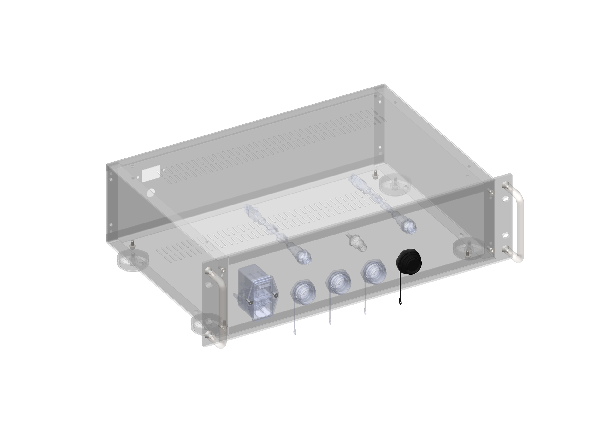 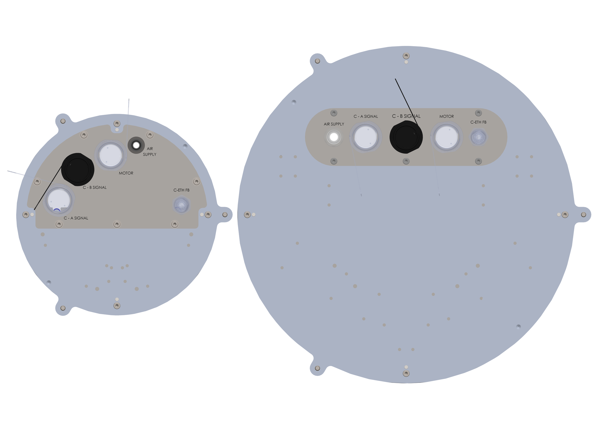 |


Note
Nach dem Einschalten stets den Zustand der Maschine anhand der Status-LEDs am Frontfeld prüfen — siehe Abschnitt Status-LEDs weiter unten auf dieser Seite.
Status-LEDs#
Am Frontfeld des FlexiBowl® befinden sich zwei Status-LEDs, die für alle Baugrößen (500–1200 und 200/350) gleich sind:
LED |
Farbe |
Bedeutung |
|---|---|---|
Light ON |
Grün (einziger Zustand) |
Zeigt an, ob das Backlight am FlexiBowl® EIN oder AUS ist. Das Backlight wird vom Bildverarbeitungssystem verwendet, um die Bauteile zu beleuchten und erkennbar zu machen. Es kann über die Bildverarbeitungssoftware oder durch Befehle eines externen Systems, das über Ethernet kommuniziert, aktiviert werden. |
Ready / Fault |
Grün |
System betriebsbereit und störungsfrei. Ethernet-Verbindung korrekt. |
Ready / Fault |
Rot |
Interne Störung oder Störung der Ethernet-Verbindung. Die Störungstabelle zu Rate ziehen. |
Note
Nach dem Einschalten warten, bis die LED Ready/Fault leuchtet: Sind Hopper und C-ETH korrekt angeschlossen, leuchtet die LED grün.
Option Circular Tracking — Schnittstellenfeld#
Das mit der Option Circular Tracking mitgelieferte Schnittstellenfeld bietet zusätzlich zu den bereits beschriebenen Anschlüssen die folgenden dedizierten Stecker:
I/O-Stecker: Austausch digitaler Signale, einschließlich der Latch-Funktion.
Encoder-Kabeldurchführung: für den im FlexiBowl® integrierten Encoder.
Aktion |
Bild |
|||||||||||||||||||||||||||||||||
|---|---|---|---|---|---|---|---|---|---|---|---|---|---|---|---|---|---|---|---|---|---|---|---|---|---|---|---|---|---|---|---|---|---|---|
10 |
Den I/O-Stecker (19-polig) anschließen. Pinbelegung des I/O-Steckers (19-polig)
|
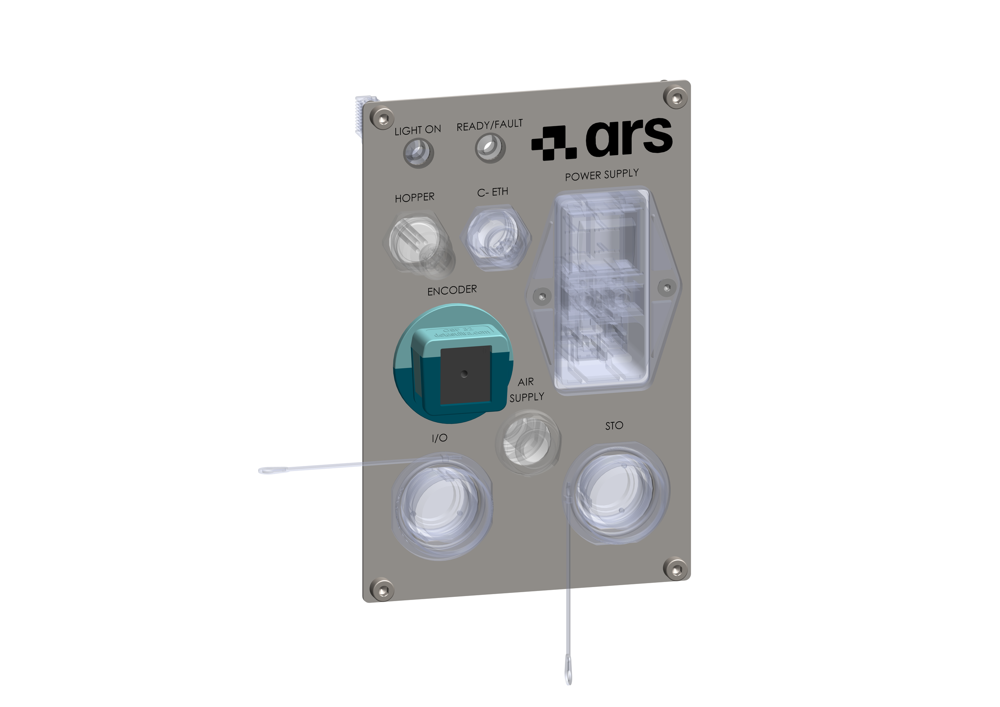 |
||||||||||||||||||||||||||||||||
11 |
Die Encoder-Kabeldurchführung anschließen, die für den im FlexiBowl® integrierten Encoder vorgesehen ist. |
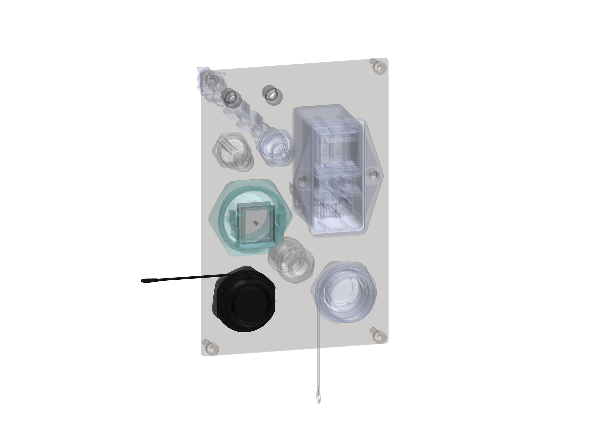 |
Allgemeine Hinweise und Warnungen#
Attention
Alle Anschlussarbeiten müssen bei ausgeschaltetem und von der Spannungsversorgung getrenntem Gerät durchgeführt werden.
Attention
Die Erdverbindung ist zwingend erforderlich und muss vor jedem Einschalten überprüft werden.
Attention
Bei einer durch die rote LED (Ready/Fault) angezeigten Störung die modellspezifische Störungstabelle zu Rate ziehen.
Attention
Für weitere technische Informationen oder Unterstützung wenden Sie sich an ARS s.r.l. – FlexiBowl® Division.